Projeto: Locadora de Veículos
Data da execução: 03/10/2026
Ferramenta: Swagger UI / OpenAPI 3.0
Resultado: 35 de 35 chamadas aprovadas
Validar pelo Swagger todas as operações CRUD das cinco entidades, os cinco filtros com joins e o tratamento padronizado de erros. Cada chamada registrou método HTTP, URL, dados enviados, código esperado, código recebido e corpo da resposta.
http://127.0.0.1:5190;Testing, com banco EF Core InMemory reiniciado antes da execução;appsettings.json.O provedor em memória foi usado somente para tornar a execução das evidências reproduzível, pois o serviço Windows MSSQL$SQLEXPRESS estava parado e exigia privilégio administrativo. Controllers, DTOs, validações, regras e rotas são exatamente os mesmos usados com o SQL Express.
Testing./swagger.O arquivo executar-testes.ps1 reproduz a sequência e resultados-testes.json conserva os retornos obtidos.
| # | Método e chamada | Retorno obtido | Resultado |
|---|---|---|---|
| 1 | POST /api/fabricantes |
201; fabricante Volkswagen, ID 1 |
Aprovado |
| 2 | POST /api/categorias-veiculo |
201; categoria SUV, ID 1 |
Aprovado |
| 3 | POST /api/clientes |
201; Maria da Silva, ID 1 |
Aprovado |
| 4 | POST /api/clientes |
201; João sem Locação, ID 2 |
Aprovado |
| 5 | POST /api/veiculos |
201; T-Cross/BRA2E19, ID 1 |
Aprovado |
| 6 | POST /api/alugueis |
201; aluguel aberto, ID 1 |
Aprovado |
| 7 | GET /api/fabricantes |
200; array contendo fabricante ID 1 |
Aprovado |
| 8 | GET /api/fabricantes/1 |
200; objeto Volkswagen |
Aprovado |
| 9 | GET /api/categorias-veiculo |
200; array contendo categoria ID 1 |
Aprovado |
| 10 | GET /api/categorias-veiculo/1 |
200; objeto SUV |
Aprovado |
| 11 | GET /api/clientes |
200; array com clientes IDs 1 e 2 |
Aprovado |
| 12 | GET /api/clientes/1 |
200; objeto Maria da Silva |
Aprovado |
| 13 | GET /api/veiculos |
200; array com T-Cross e seus relacionamentos |
Aprovado |
| 14 | GET /api/veiculos/1 |
200; objeto T-Cross/BRA2E19 |
Aprovado |
| 15 | GET /api/alugueis |
200; array com aluguel ID 1 |
Aprovado |
| 16 | GET /api/alugueis/1 |
200; aluguel de Maria e T-Cross |
Aprovado |
| 17 | PUT /api/fabricantes/1 |
204; nome alterado para Volkswagen Brasil |
Aprovado |
| 18 | PUT /api/categorias-veiculo/1 |
204; nome alterado para SUV Premium |
Aprovado |
| 19 | PUT /api/clientes/1 |
204; cliente alterado para Maria Souza |
Aprovado |
| 20 | PUT /api/veiculos/1 |
204; modelo alterado para T-Cross Highline |
Aprovado |
| 21 | PUT /api/alugueis/1 |
204; devolução registrada, 12.450 km e total 720,00 |
Aprovado |
| 22 | GET /api/filtros/veiculos-por-fabricante?nome=Volkswagen |
200; veículo ID 1 |
Aprovado |
| 23 | GET /api/filtros/veiculos-por-categoria?nome=SUV&quilometragemMaxima=50000 |
200; veículo ID 1 |
Aprovado |
| 24 | GET /api/filtros/alugueis-por-cliente?termo=Maria |
200; aluguel ID 1 |
Aprovado |
| 25 | GET /api/filtros/alugueis-por-periodo?inicio=2026-10-01T00:00:00&fim=2026-10-10T00:00:00 |
200; aluguel ID 1 |
Aprovado |
| 26 | GET /api/filtros/clientes-sem-aluguel |
200; cliente João, ID 2; comprova LEFT JOIN |
Aprovado |
| 27 | POST /api/clientes com {} |
400; ValidationProblemDetails com campos obrigatórios |
Aprovado |
| 28 | GET /api/fabricantes/99999 |
404; ProblemDetails informando recurso inexistente |
Aprovado |
| 29 | POST /api/fabricantes com nome duplicado |
409; ProblemDetails informando conflito |
Aprovado |
| 30 | DELETE /api/alugueis/1 |
204; sem corpo |
Aprovado |
| 31 | DELETE /api/veiculos/1 |
204; sem corpo |
Aprovado |
| 32 | DELETE /api/clientes/2 |
204; sem corpo |
Aprovado |
| 33 | DELETE /api/clientes/1 |
204; sem corpo |
Aprovado |
| 34 | DELETE /api/categorias-veiculo/1 |
204; sem corpo |
Aprovado |
| 35 | DELETE /api/fabricantes/1 |
204; sem corpo |
Aprovado |
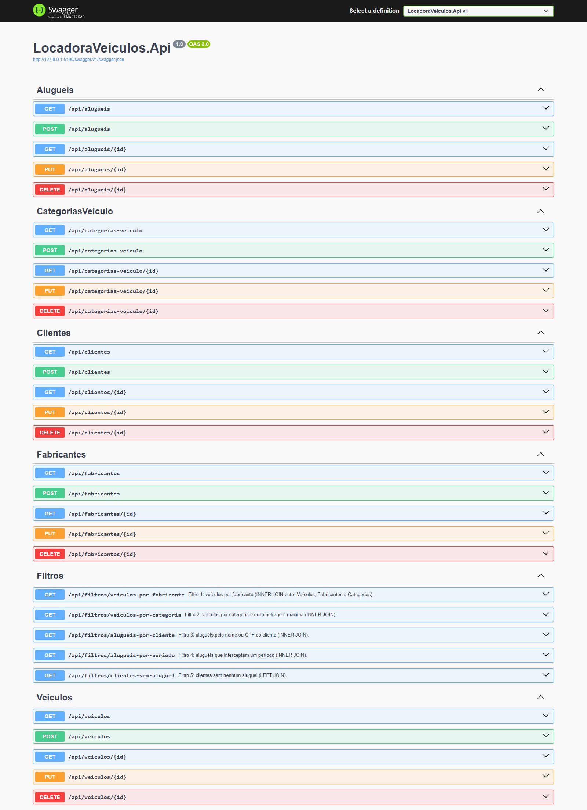
A captura mostra chamada, Request URL, código 200 e aluguel devolvido no corpo.
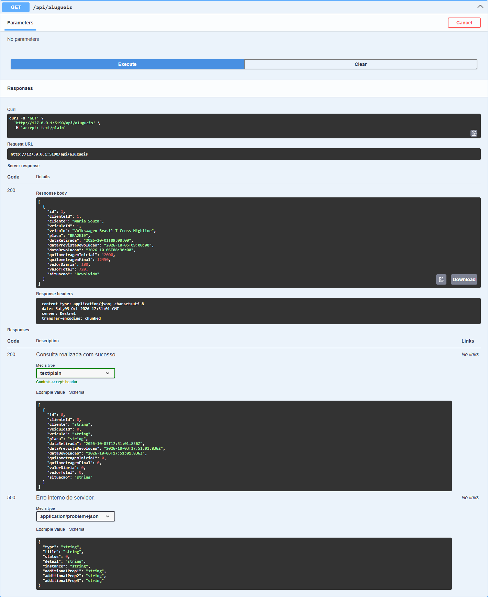
A captura mostra o JSON enviado, comando curl gerado, URL, objeto criado e códigos documentados.
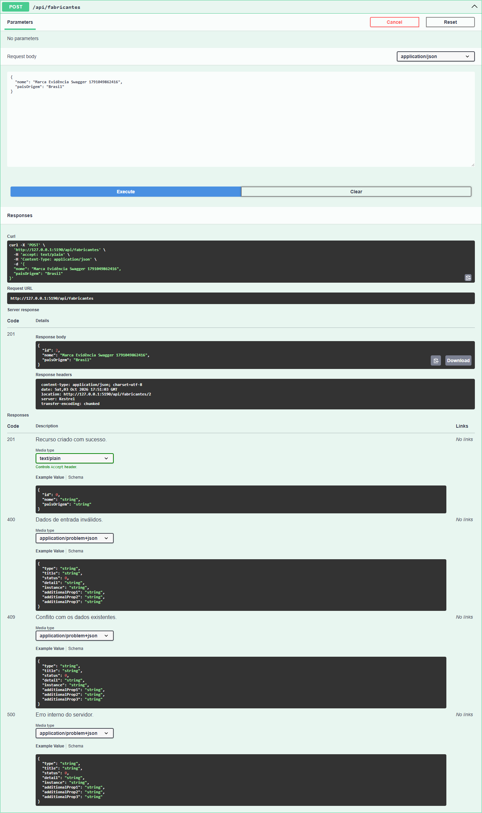
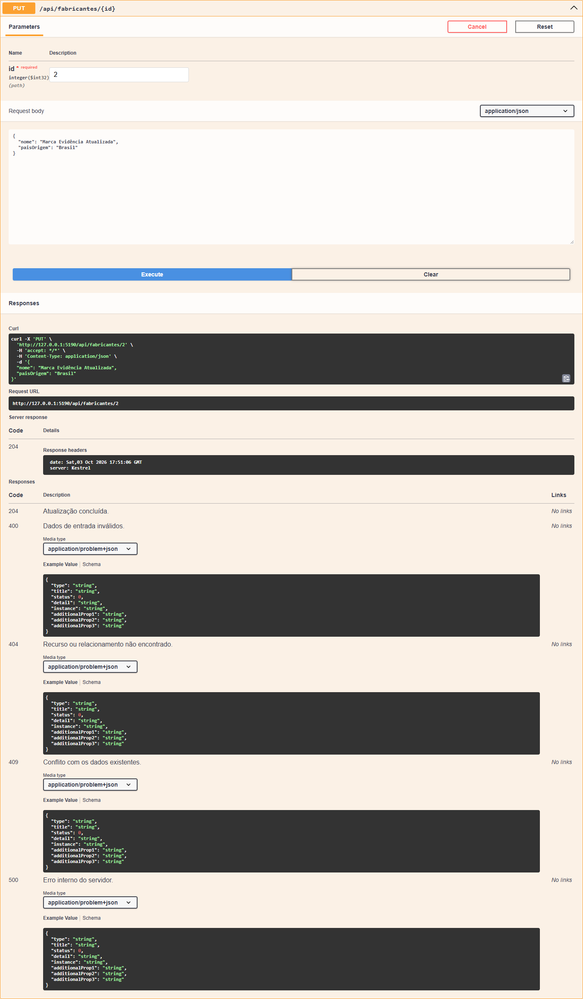
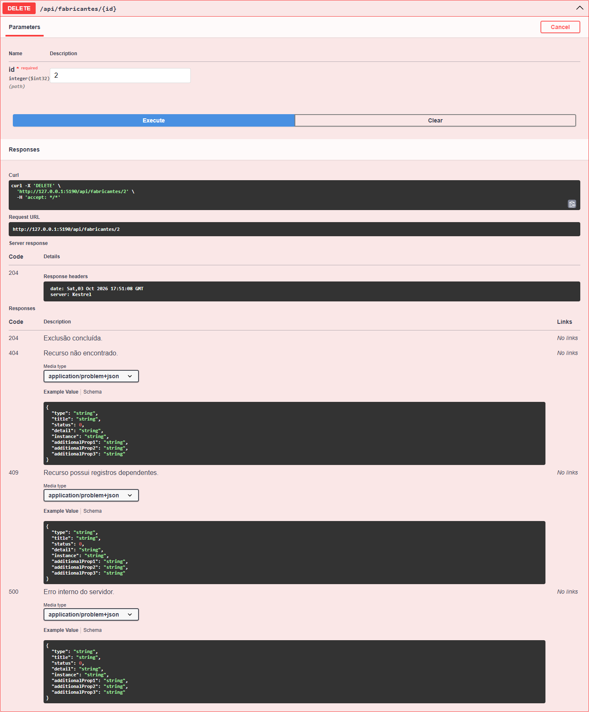
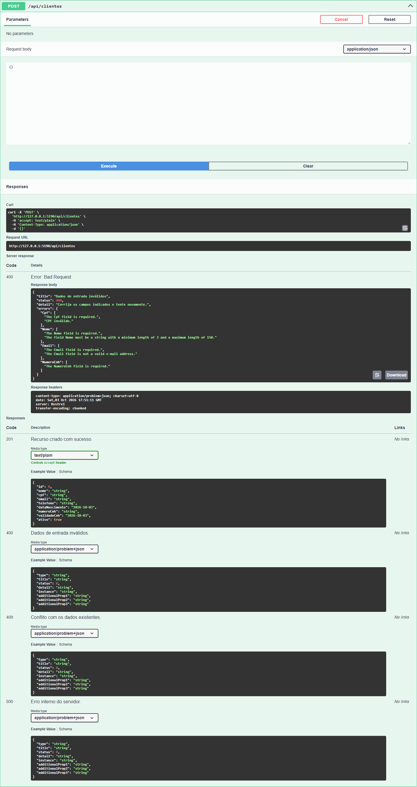
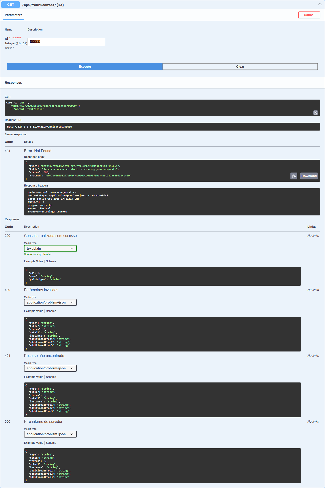
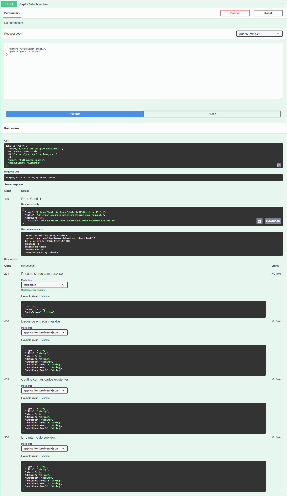
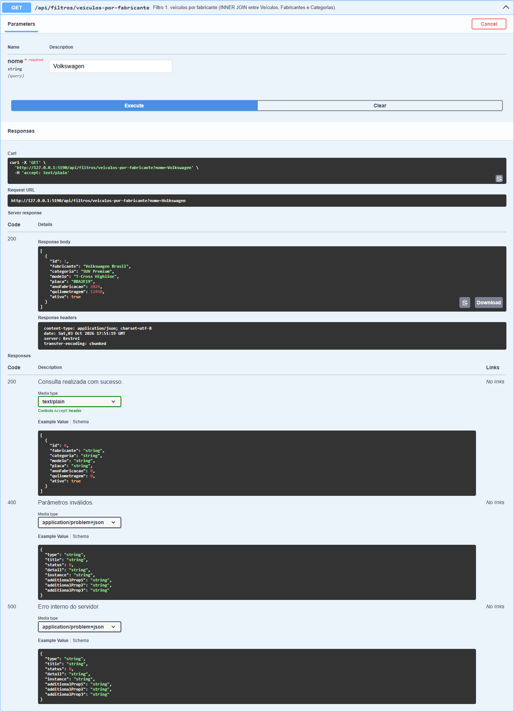
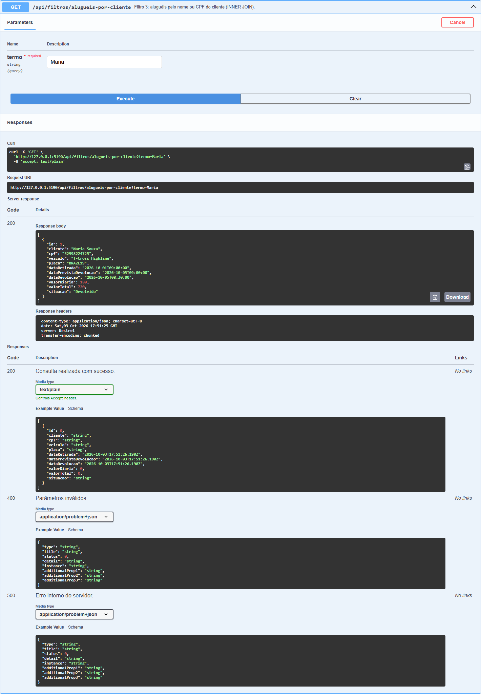
A resposta contém o cliente João, que não possui aluguel, comprovando o resultado da junção externa.
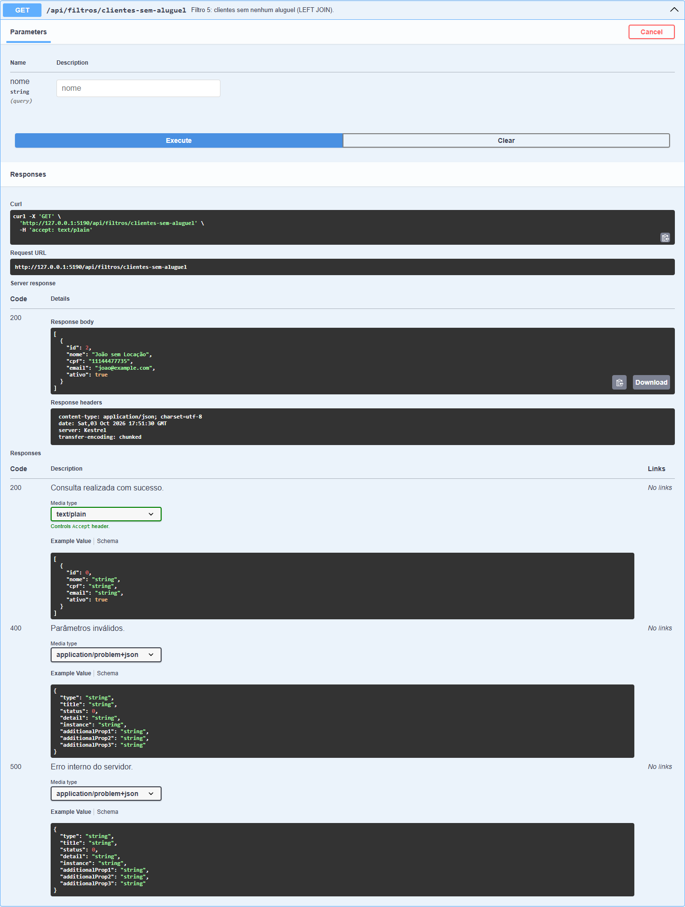
Na primeira execução, a validação de ValorDiaria dependia da conversão textual de 0.01. Em cultura pt-BR, essa conversão produzia exceção e HTTP 500. A regra foi substituída por comparação decimal direta, independente de cultura. Após a correção, a bateria completa passou com 35/35 chamadas aprovadas.
INNER JOIN e LEFT JOIN;